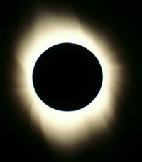

The outermost layer of the Sun is known as the corona. Due to its low density of particles (roughly 10-16 grams per cubic centimeter) we can see right through it, and the underlying chromosphere, down to the photosphere – the visible surface of the Sun.

Credit: © Bill Ronald
The so-called “white light corona” originates from emission lines, such as ionised helium, iron, nickel and calcium (E corona), continuum sunlight scattered off electrons close to the chromosphere (K corona), or sunlight scattered off interplanetary dust (F corona).
At a temperature of several million degrees, the corona is hotter than the surface of the Sun, and glows at X-ray wavelengths. The often irregularly-shaped X-ray images can trace coronal holes and coronal mass ejections, reflecting the active nature of our Sun.